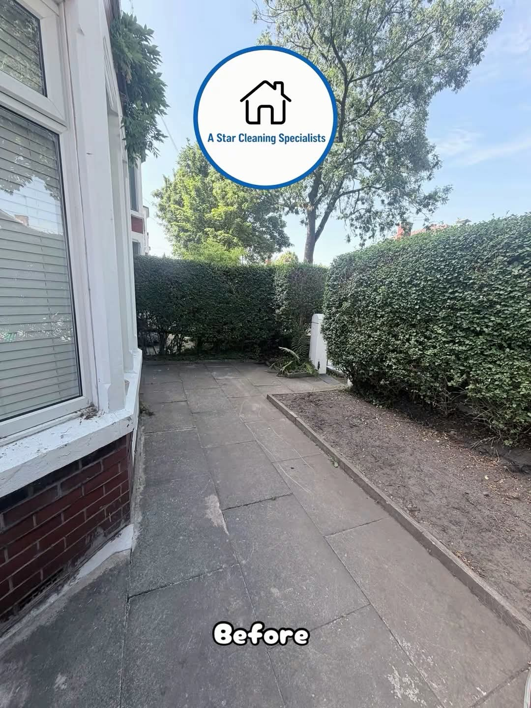
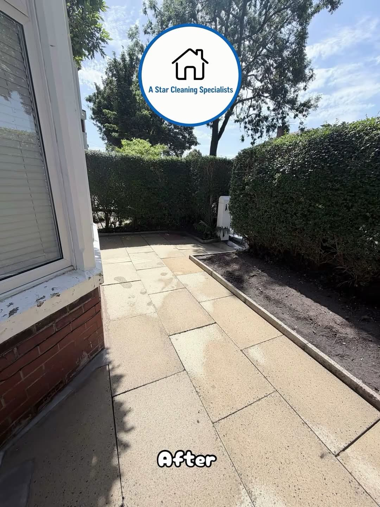
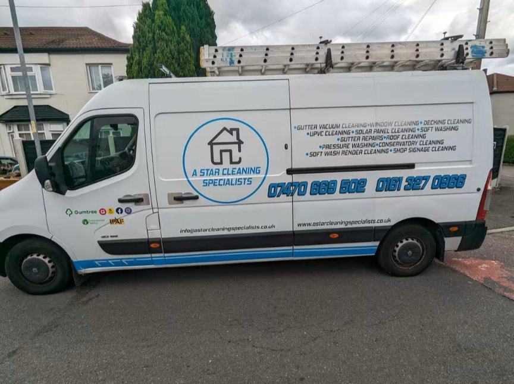
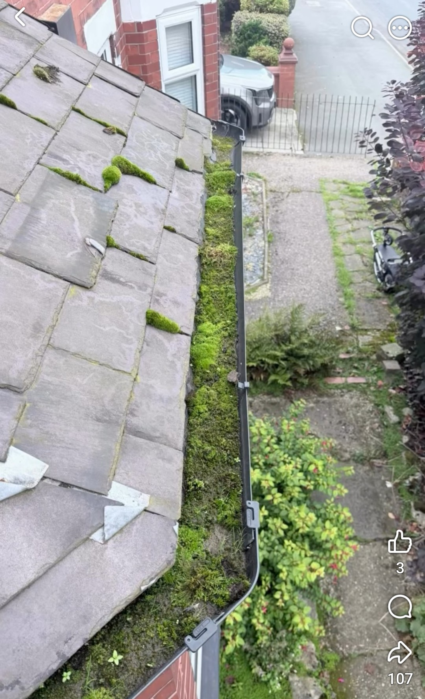
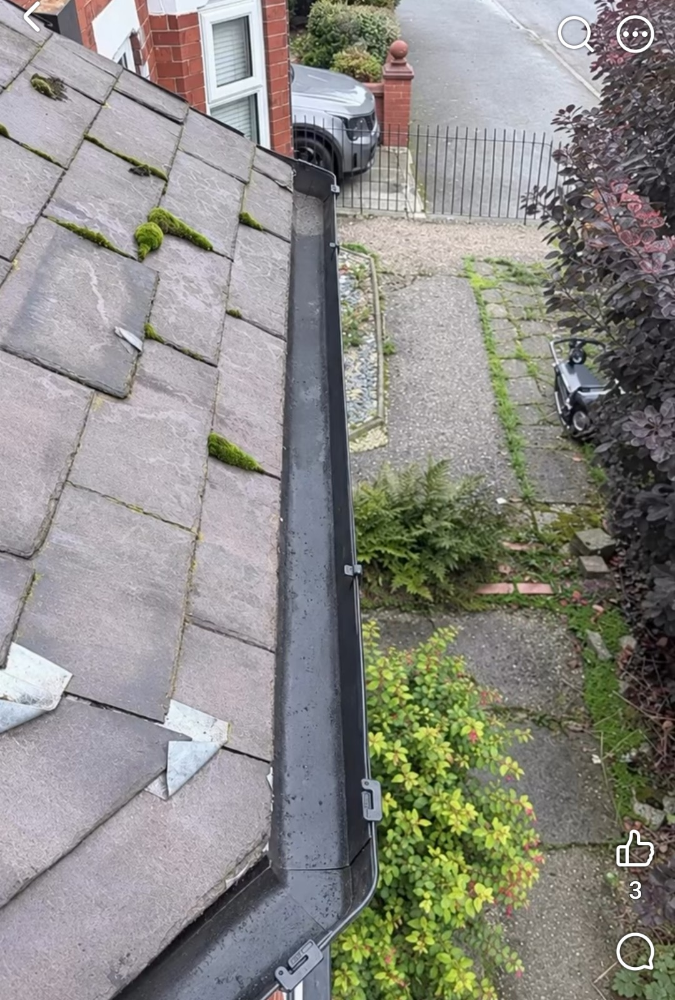
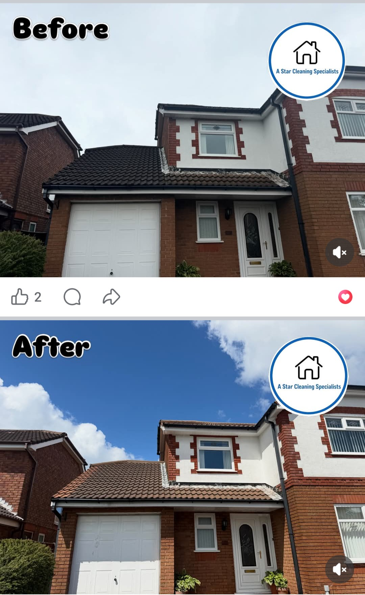
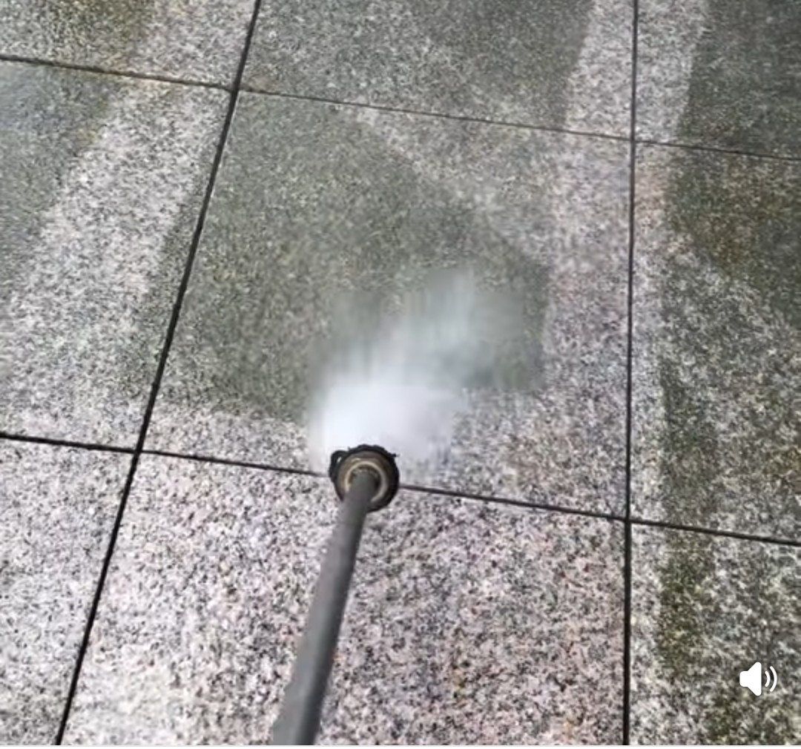
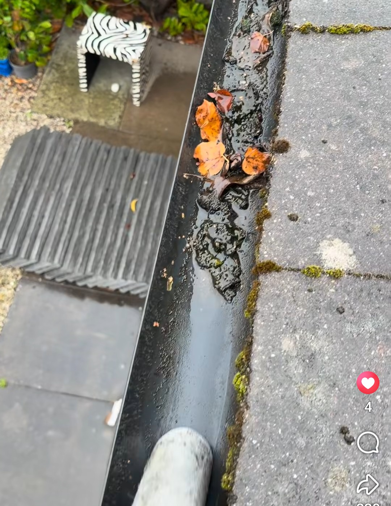
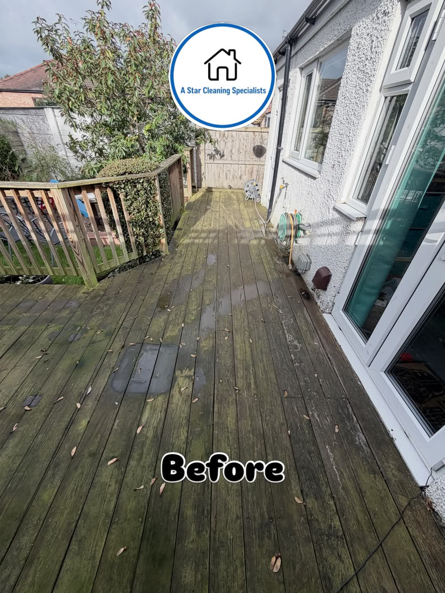

01 / Patio restoration
A brighter, cleaner entrance
Built-up surface dirt was removed from the paving to restore a lighter, more even finish around the property.


Exterior cleaning · Greater Manchester
Professional patio, roof, gutter and exterior cleaning across Manchester and surrounding areas.

Fully insuredWork carried out with care
Free quotesClear, no-obligation pricing
Local serviceManchester & surrounding areas
Selected work
Real exterior cleaning work from homes across the area. Use the labels to compare the condition before and after treatment.
01 / Patio restoration
Built-up surface dirt was removed from the paving to restore a lighter, more even finish around the property.


02 / Gutter clearing
Moss, leaves and compacted debris were removed so rainwater could move freely through the guttering again.





What we clean
From routine maintenance to a visible refresh, choose the services your home or premises need. Not sure what treatment is right? Send a photo with your quote request.
Discuss your property
A straightforward service
Every property is different. We look at the surface, access and level of build-up before recommending the appropriate cleaning method.
Send a few photos and your location, or arrange a visit.
We explain the proposed work before you decide.
We complete the clean and leave the area tidy.
Free, no-obligation quote
Tell us what needs cleaning and include a few photos if you can. We cover Manchester and surrounding areas.
Phone and email details are ready to be replaced with your live contact information.